Direct API Connection
Connects from Electron's main process, bypassing browser CORS and accepting self-signed certificates with an optional per-profile SSL toggle.
A native Windows app that talks directly to the Proxmox REST API — no browser tabs, no CORS workarounds, no certificate warnings. Manage your homelab or production cluster from one clean interface.
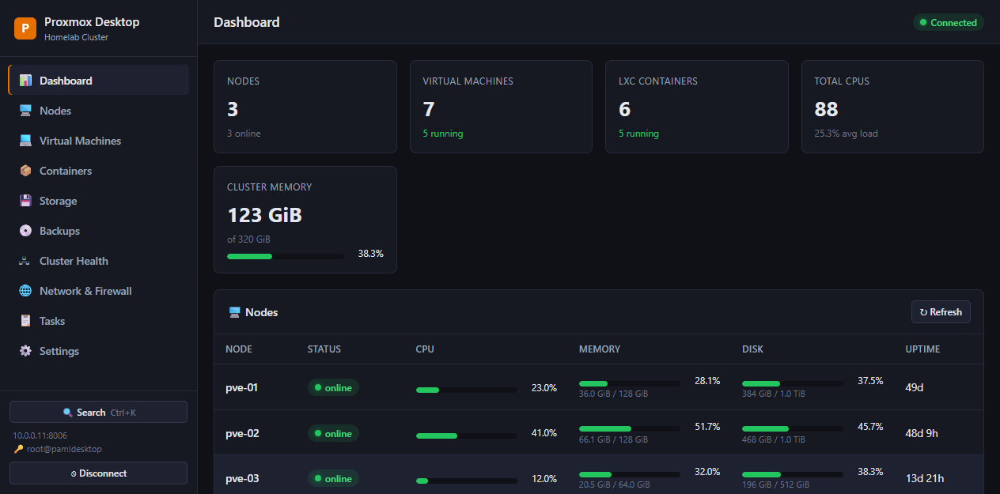
Built for daily Proxmox operators. Connect once, then fly through VMs, containers, storage, backups, networking, and cluster health with a keyboard-first desktop experience.
Connects from Electron's main process, bypassing browser CORS and accepting self-signed certificates with an optional per-profile SSL toggle.
Use API tokens (user@realm!tokenid) or username/password. Credentials are encrypted with Windows DPAPI and stored locally.
See nodes, VMs, containers, CPU, memory, and storage at a glance with live resource bars and real-time status indicators.
List, search, filter, and control QEMU and LXC guests. Start, shutdown, reboot, stop, migrate, and edit guest configs from one surface.
Per-node RRD history charts and guest-level CPU, memory, network, and disk I/O graphs that auto-refresh as you watch.
Open VM and container consoles in-app. Auth cookies are injected automatically for password-based sessions.
Browse backups per storage, trigger vzdump, restore guests, and delete old backups without leaving the app.
Press Ctrl K to jump to any page or open any VM, container, or node instantly. No mouse required.
Monitor quorum, members, HA services, replication, network interfaces, bridges, bonds, VLANs, and firewall rules.
Choose the theme that fits your environment. The whole UI — including charts, tables, and forms — adapts cleanly.
Built-in updater checks GitHub Releases and installs new Windows builds automatically via CI/CD pipelines.
Shortcuts for navigation, search, refresh, and lifecycle actions. Designed to keep admins moving fast.
Save multiple connections, pick API token or password auth, and disable SSL verification for self-signed Proxmox certificates. Each profile is stored and encrypted locally, never sent anywhere.
All screenshots are captured from the built-in demo mode — every view populated so you can evaluate the UI without a Proxmox host.
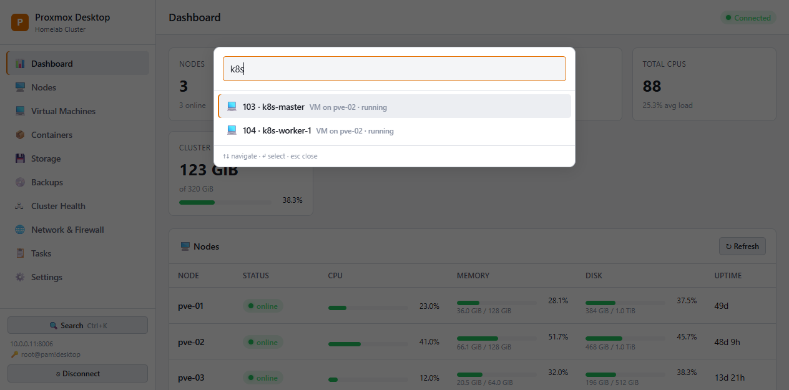
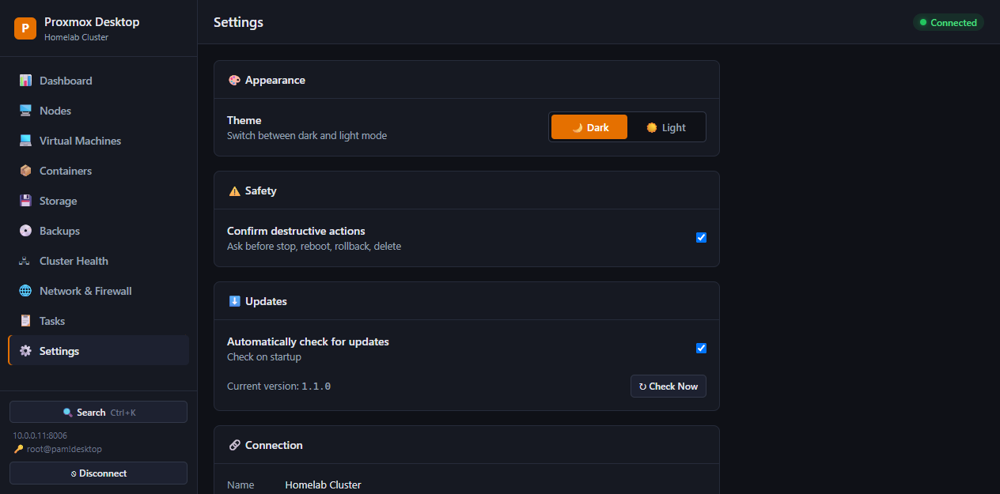
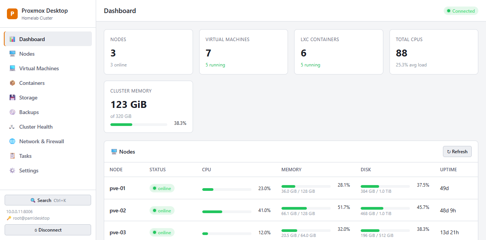
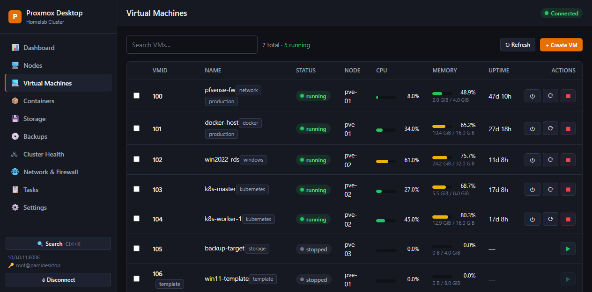
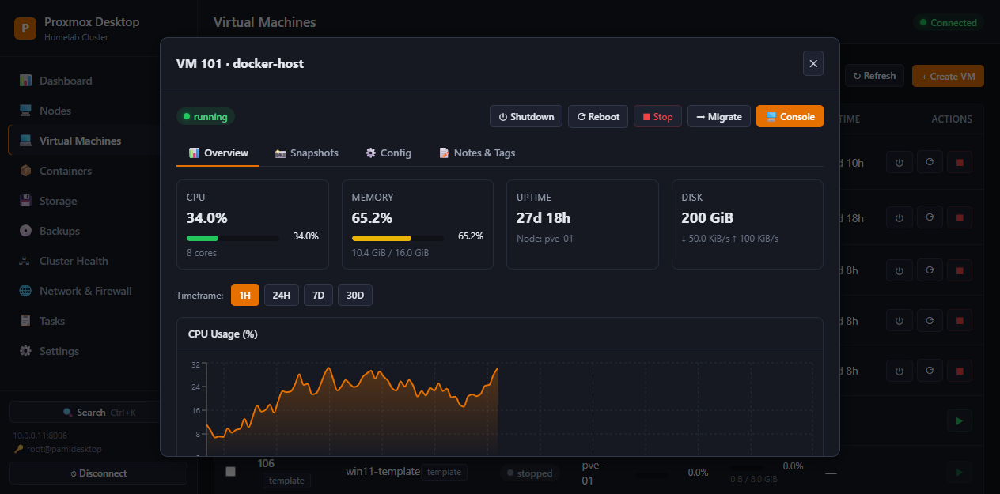
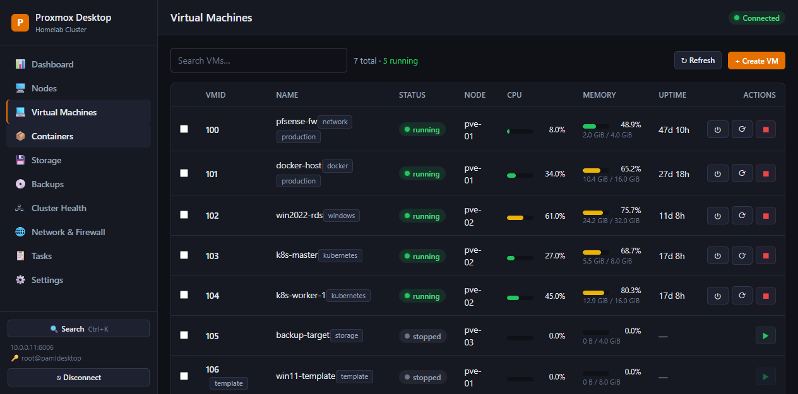
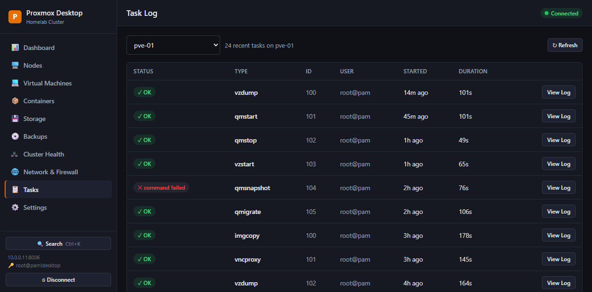
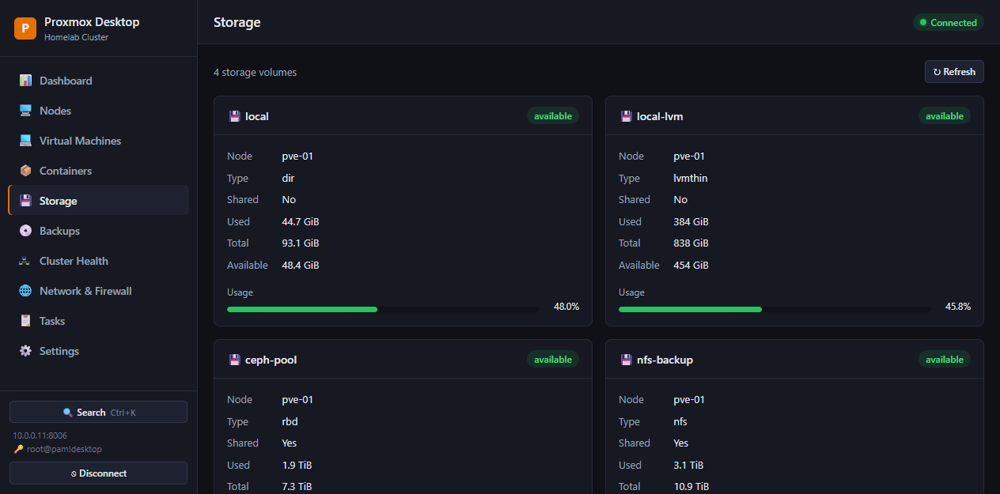
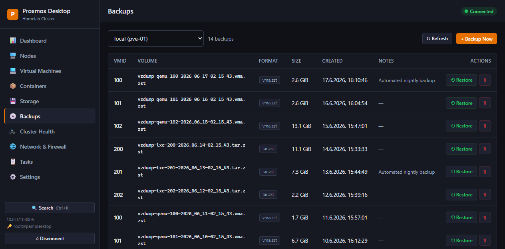
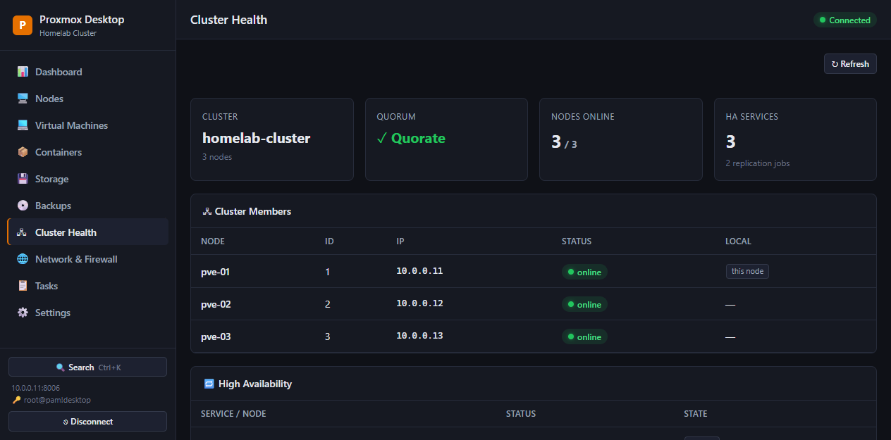
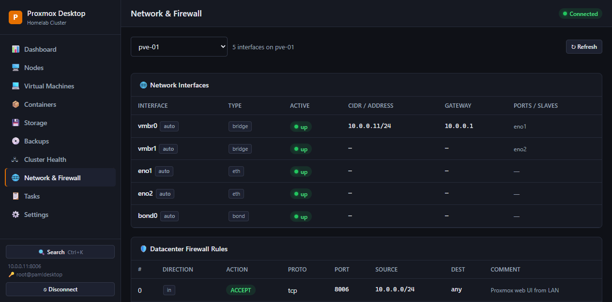
Clone, install, and run. Or download the latest Windows installer from GitHub Releases.
git clone https://github.com/Reichel-Network/proxmox-desktop.git
cd proxmox-desktop
npm installnpm run devOpens Electron + Vite with DevTools.
VITE_MOCK=1 npm run dev:rendererNo Proxmox host required — open http://localhost:5273.
Build & package: npm run build compiles everything; npm run dist creates the Windows NSIS installer in release/.
Latest release includes the Windows installer, auto-update metadata, and blockmap. Released automatically via GitHub Actions.